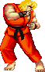
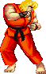

The term "arcade game" is also used to refer to an action video game that was designed to play similarly to an arcade game with frantic, addictive gameplay.
The focus of arcade action games is on the user's reflexes, and the games usually feature very little puzzle-solving, complex thinking, or strategy skills.
Games with complex thinking are called strategy video games or puzzle video games.
The first popular "arcade games" included early amusement-park midway games such as shooting galleries, ball-toss games, and the earliest coin-operated machines, such as those that claimed to tell a person's fortune or that played mechanical music.
The old midways of 1920s-era amusement parks (such as Coney Island in New York) provided the inspiration and atmosphere of later arcade games. In the 1930s the first coin-operated pinball machines emerged.
These early amusement machines differed from their later electronic cousins in that they were made of wood. They lacked plungers or lit-up bonus surfaces on the playing field, and used mechanical instead of electronic scoring-readouts.
By around 1977 most pinball machines in production switched to using solid-state electronics both for operation and for scoring.
For more information on the history of ARCADE Games, CLICK HERE


 
